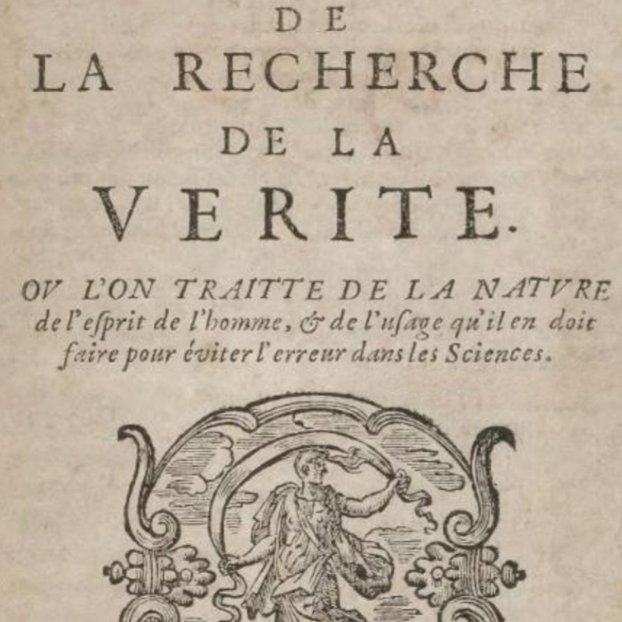

Malebranche’s Search after Truth
Tue., Feb. 25
In this class, we discuss the metaphysical views of Nicolas Malebranche, as found especially in his Search After Truth. The two main doctrines to
know are: (1) The so-called “Vision in God” doctrine, which holds that the ideas we perceive are not modifications of our own soul (the rival
view of Arnauld) but are instead archetypes in the divine essence; (2) Occasionalism, which holds that nothing in nature ever possesses or exercises any real
causal power, and that all effects are produced by God. We also consider some of the related issues and problems Malebranche faces: e.g., free will, knowledge
of oneself, theodicy, miracles.
Key Concepts: Vision in God, Intelligible Extension, Occasionalism
Readings:
required (at least skimming) - Book 1, Chapter 1: pp. 1–6 (in pdf), pp. 480–84 (in textbook)
required - Book 3, Part 2, Chapter 6: pp. 20–25 (in pdf), pp. 493–97 (in textbook)
required - Book 6, Part 2, Chapter 3: pp. 31–37 (in pdf), pp. 497–501 (in textbook)
optional - the remainder of the pdf
Other Resources:
Stanford Encyclopedia of Philosophy
Internet Encyclopedia of Philosophy